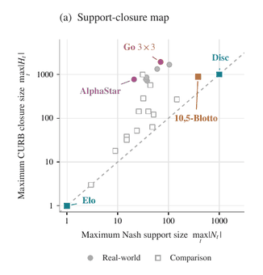
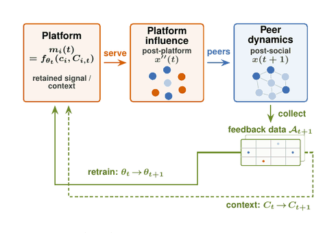
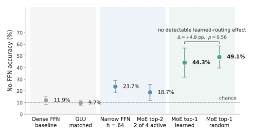
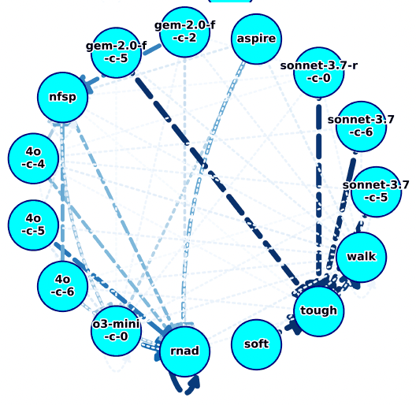
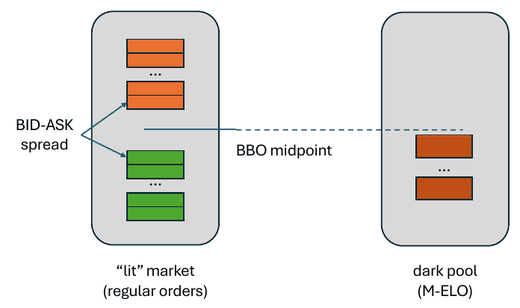

Selected Research and Projects
Negotiating Agents: Strategic and Behavioral Evaluation
In progress · OpenAI-funded (U‑M / OpenAI partnership) · 2026
Evaluating LLM negotiation agents on both strategic performance and the behavior they exhibit while bargaining.

Beyond Equilibrium Support: Counterfactual Influence and Best-Response Structure in Empirical Games
Under review · 2026

How Regularization During LLM Post-Training Can Shape Collective Opinion
NeurIPS 2026 Workshop on Foundations of LLM Post-Training in Changing Environments · Full paper in preparation · 2026 / Working Paper

Sparsity Moves Computation: How FFN Architecture Reshapes Attention in Small Transformers
ICML 2026 Mechanistic Interpretability Workshop · 2026 / arXiv:2605.09403

Measuring Competition and Cooperation in LLM Bargaining: An Empirical Meta-Game Analysis
ICML 2025 MAS Workshop · NBER Conference on Econometrics and Mathematical Economics 2026 · 1st place, AgentX–AgentBeats Competition (UC Berkeley RDI) · 2025–2026 / Working Paper

Market Selection with Midpoint Matching: A Strategic Agent-Based Analysis
ACM International Conference on AI in Finance 2025 (ICAIF) · Oral presentation (top 15%) · 2025 / PDF